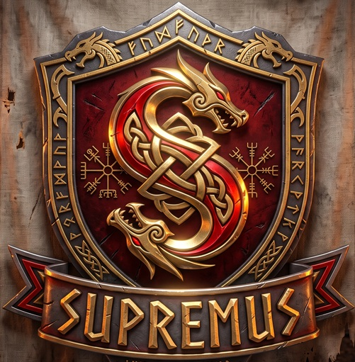

Clique no botão verde lá em cima. O arquivo MacroSupremes-Setup.exe vai pra sua pasta Downloads.
Dê dois cliques no MacroSupremes-Setup.exe (na barra do navegador ou na pasta Downloads).
Clique em Mais informações e depois em Executar assim mesmo.
O Windows vai perguntar se permite o app fazer alterações. Clique em Sim.
A instalação é automática e rápida. Quando terminar, aparece "Pronto!".
Um atalho Macro Supremes foi criado na sua área de trabalho. Dê dois cliques nele pra jogar. (Vai pedir a permissão do passo 4 de novo — clique Sim.)